Aligning two coronal sections of adult mouse brain from MERFISH
In this notebook, we align two single cell resolution spatial transcriptomics datasets of coronal sections of the adult mouse brain from matched locations with respect to bregma assayed by MERFISH.
We will use STalign to achieve this alignment. We will first load the relevant code libraries.
[1]:
## import dependencies
import numpy as np
import matplotlib.pyplot as plt
import matplotlib.transforms as mtransforms
import pandas as pd
import torch
import plotly
import requests
# make plots bigger
plt.rcParams["figure.figsize"] = (12,10)
[2]:
## skip cell if STalign.py in same folder as notebook
import sys
sys.path.append("../../STalign")
[3]:
## import STalign from upper directory
import STalign
We have already downloaded single cell spatial transcriptomics datasets and placed the files in a folder called merfish_data.
We can read in the cell information for the first dataset using pandas as pd.
[4]:
# Single cell data 1
# read in data
fname = '../merfish_data/datasets_mouse_brain_map_BrainReceptorShowcase_Slice2_Replicate3_cell_metadata_S2R3.csv.gz'
df1 = pd.read_csv(fname)
print(df1.head())
Unnamed: 0 fov volume center_x \
0 158338042824236264719696604356349910479 33 532.778772 617.916619
1 260594727341160372355976405428092853003 33 1004.430016 596.808018
2 307643940700812339199503248604719950662 33 1267.183208 578.880018
3 30863303465976316429997331474071348973 33 1403.401822 572.616017
4 313162718584097621688679244357302162401 33 507.949497 608.364018
center_y min_x max_x min_y max_y
0 2666.520010 614.725219 621.108019 2657.545209 2675.494810
1 2763.450012 589.669218 603.946818 2757.013212 2769.886812
2 2748.978012 570.877217 586.882818 2740.489211 2757.466812
3 2766.690012 564.937217 580.294818 2756.581212 2776.798812
4 2687.418010 603.061218 613.666818 2682.493210 2692.342810
For alignment with STalign, we only need the cell centroid information so we can pull out this information. We can further visualize the cell centroids to get a sense of the variation in cell density that we will be relying on for our alignment by plotting using matplotlib.pyplot as plt.
[5]:
# get cell centroid coordinates
xI = np.array(df1['center_x'])
yI = np.array(df1['center_y'])
# plot
fig,ax = plt.subplots()
ax.scatter(xI,yI,s=1,alpha=0.2, label='source')
ax.legend(markerscale = 10)
[5]:
<matplotlib.legend.Legend at 0x12b1d7c20>
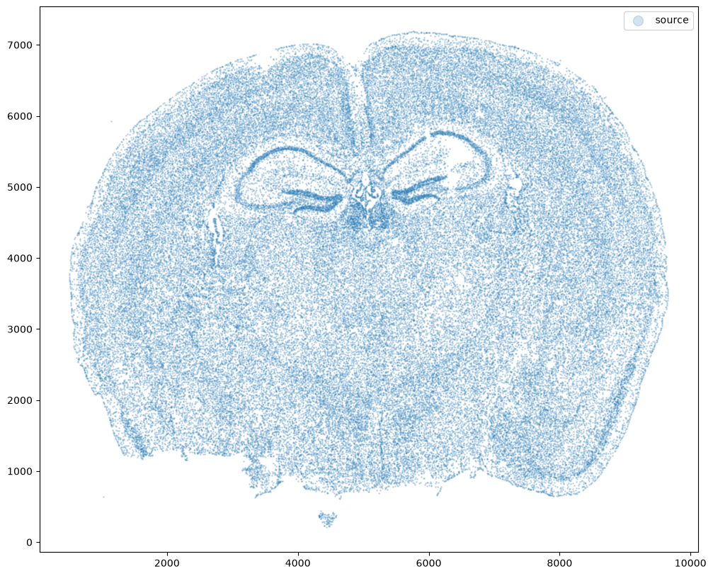
Now, we can repeat this to get cell information from the second dataset.
[6]:
# Single cell data 2
# read in data
fname = '../merfish_data/datasets_mouse_brain_map_BrainReceptorShowcase_Slice2_Replicate2_cell_metadata_S2R2.csv.gz'
df2 = pd.read_csv(fname)
# get cell centroids
xJ = np.array(df2['center_x'])
yJ = np.array(df2['center_y'])
# plot
fig,ax = plt.subplots()
ax.scatter(xJ,yJ,s=1,alpha=0.2,c='#ff7f0e', label='target')
ax.legend(markerscale = 10)
[6]:
<matplotlib.legend.Legend at 0x12e49fb60>

Note that plotting the cell centroid positions from both datasets shows that non-linear local alignment is needed.
[7]:
# plot
fig,ax = plt.subplots()
ax.scatter(xI,yI,s=1,alpha=0.2, label='source')
ax.scatter(xJ,yJ,s=1,alpha=0.1, label= 'target')
ax.legend(markerscale = 10)
[7]:
<matplotlib.legend.Legend at 0x12ed361b0>
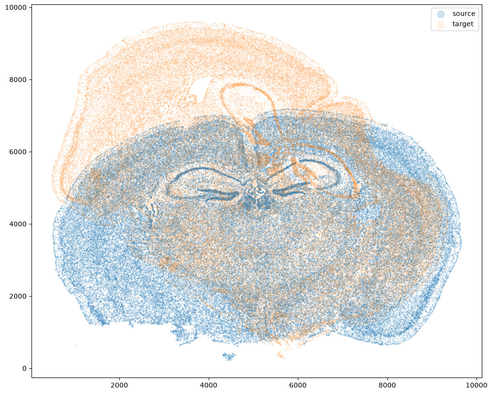
Now, we will first use STalign to rasterize the single cell centroid positions into an image. Assuming the single-cell centroid coordinates are in microns, we will perform this rasterization at a 30 micron resolution. We can visualize the resulting rasterized image.
Note that points are plotting with the origin at bottom left while images are typically plotted with origin at top left so we’ve used invert_yaxis() to invert the yaxis for visualization consistency.
[8]:
# rasterize at 30um resolution (assuming positions are in um units) and plot
XI,YI,I,fig = STalign.rasterize(xI,yI,dx=15,blur=1.5)
# plot
ax = fig.axes[0]
ax.invert_yaxis()
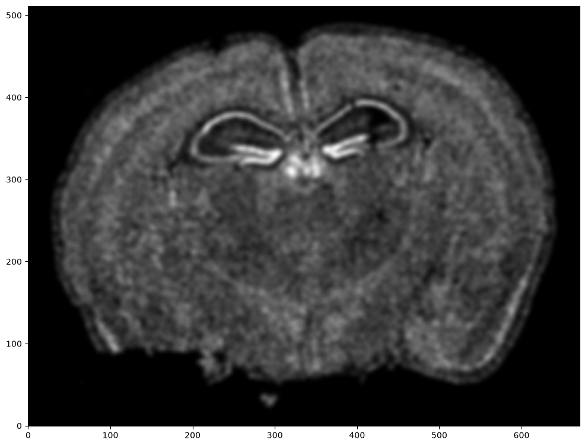
Repeat rasterization for target dataset.
[9]:
# rasterize and plot
XJ,YJ,J,fig = STalign.rasterize(xJ,yJ,dx=15, blur=1.5)
ax = fig.axes[0]
ax.invert_yaxis()

We can also plot the rasterized images next to each other.
[10]:
# get extent of images
extentI = STalign.extent_from_x((YI,XI))
extentJ = STalign.extent_from_x((YJ,XJ))
# plot rasterized images
fig,ax = plt.subplots(1,2)
ax[0].imshow(I.transpose(1,2,0).squeeze(), extent=extentI)
ax[1].imshow(J.transpose(1,2,0).squeeze(), extent=extentJ)
ax[0].invert_yaxis()
ax[1].invert_yaxis()
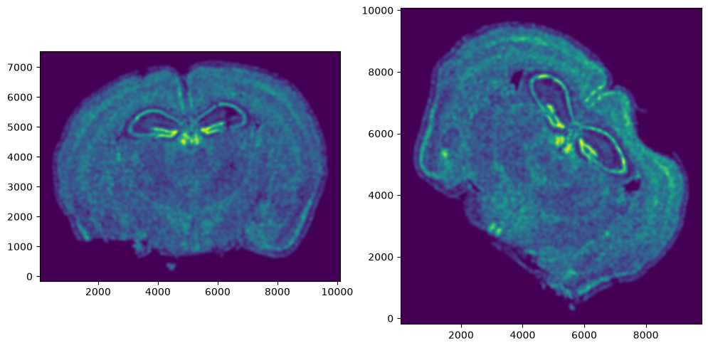
We can manually designate a few landmark points to help initialize the alignment. A point_annotator.py script is provided to assist with this. In order to use the point_annotator.py script, we will need to write out our images as .npz files.
[11]:
np.savez('../merfish_data/Merfish_S2_R3', x=XI,y=YI,I=I)
np.savez('../merfish_data/Merfish_S2_R2', x=XJ,y=YJ,I=J)
Given these .npz files, we can then run the following code on the command line from inside the notebooks folder:
python ../../STalign/point_annotator.py ../merfish_data/Merfish_S2_R3.npz ../merfish_data/Merfish_S2_R2.npz
Which will provide a graphical user interface to selecting points. These points will saved as Merfish_S2_R3_points.npy and Merfish_S2_R2_points.npy respectively. We can then read in these files.
[12]:
# read from file
pointsIlist = np.load('../merfish_data/Merfish_S2_R3_points.npy', allow_pickle=True).tolist()
print(pointsIlist)
pointsJlist = np.load('../merfish_data/Merfish_S2_R2_points.npy', allow_pickle=True).tolist()
print(pointsJlist)
{'all': [(np.float64(4543.712969822371), np.float64(6776.805022223103)), (np.float64(4996.096840790115), np.float64(6824.424377061813)), (np.float64(5043.716195628824), np.float64(4752.982441577941)), (np.float64(3067.5129698223714), np.float64(4872.030828674716)), (np.float64(3900.851679499791), np.float64(4776.792118997297)), (np.float64(7019.919421435276), np.float64(5205.366312545683)), (np.float64(6091.342002080437), np.float64(5014.888893190845)), (np.float64(1543.6936149836606), np.float64(3395.830828674716)), (np.float64(3186.561356919145), np.float64(3419.6405060940706)), (np.float64(7115.158131112696), np.float64(3729.1663125456835)), (np.float64(8519.92909885463), np.float64(3038.685667384392)), (np.float64(5258.0032924030165), np.float64(2419.6340544811665)), (np.float64(5091.335550467533), np.float64(705.3372802876183))]}
{'all': [(np.float64(6777.380999410521), np.float64(7706.03581124174)), (np.float64(7123.880999410521), np.float64(7405.73581124174)), (np.float64(5529.9809994105235), np.float64(5765.63581124174)), (np.float64(4305.680999410524), np.float64(7613.635811241739)), (np.float64(4883.180999410524), np.float64(6643.435811241739)), (np.float64(7239.380999410521), np.float64(4726.13581124174)), (np.float64(6269.180999410521), np.float64(5211.2358112417405)), (np.float64(2249.780999410523), np.float64(7475.03581124174)), (np.float64(3289.280999410523), np.float64(6158.33581124174)), (np.float64(6615.680999410521), np.float64(3247.7358112417405)), (np.float64(6638.780999410523), np.float64(2046.5358112417398)), (np.float64(4074.6809994105242), np.float64(3963.835811241741)), (np.float64(3058.280999410523), np.float64(2693.335811241741))]}
Note that these landmark points are read in as lists. We will want to convert them to a simple array for downstream usage.
[13]:
# convert to array
pointsI = []
pointsJ = []
for i in pointsIlist.keys():
for j in range(len(pointsIlist[i])):
pointsI.append([pointsIlist[i][j][1], pointsIlist[i][j][0]])
for i in pointsJlist.keys():
for j in range(len(pointsJlist[i])):
pointsJ.append([pointsJlist[i][j][1], pointsJlist[i][j][0]])
pointsI = np.array(pointsI)
pointsJ = np.array(pointsJ)
[14]:
# now arrays
print(pointsI)
print(pointsJ)
[[6776.80502222 4543.71296982]
[6824.42437706 4996.09684079]
[4752.98244158 5043.71619563]
[4872.03082867 3067.51296982]
[4776.792119 3900.8516795 ]
[5205.36631255 7019.91942144]
[5014.88889319 6091.34200208]
[3395.83082867 1543.69361498]
[3419.64050609 3186.56135692]
[3729.16631255 7115.15813111]
[3038.68566738 8519.92909885]
[2419.63405448 5258.0032924 ]
[ 705.33728029 5091.33555047]]
[[7706.03581124 6777.38099941]
[7405.73581124 7123.88099941]
[5765.63581124 5529.98099941]
[7613.63581124 4305.68099941]
[6643.43581124 4883.18099941]
[4726.13581124 7239.38099941]
[5211.23581124 6269.18099941]
[7475.03581124 2249.78099941]
[6158.33581124 3289.28099941]
[3247.73581124 6615.68099941]
[2046.53581124 6638.78099941]
[3963.83581124 4074.68099941]
[2693.33581124 3058.28099941]]
We can double check that our landmark points look sensible by plotting them along with the rasterized image we created.
[15]:
# plot
fig,ax = plt.subplots(1,2)
ax[0].imshow((I.transpose(1,2,0).squeeze()), extent=extentI)
ax[1].imshow((J.transpose(1,2,0).squeeze()), extent=extentJ)
trans_offset_0 = mtransforms.offset_copy(ax[0].transData, fig=fig,
x=0.05, y=-0.05, units='inches')
trans_offset_1 = mtransforms.offset_copy(ax[1].transData, fig=fig,
x=0.05, y=-0.05, units='inches')
ax[0].scatter(pointsI[:,1],pointsI[:,0], c='red', s=10)
ax[1].scatter(pointsJ[:,1],pointsJ[:,0], c='red', s=10)
for i in pointsIlist.keys():
for j in range(len(pointsIlist[i])):
ax[0].text(pointsIlist[i][j][0], pointsIlist[i][j][1],f'{i}{j}', c='red', transform=trans_offset_0, fontsize= 8)
for i in pointsJlist.keys():
for j in range(len(pointsJlist[i])):
ax[1].text(pointsJlist[i][j][0], pointsJlist[i][j][1],f'{i}{j}', c='red', transform=trans_offset_1, fontsize= 8)
ax[0].set_title('source with pointsI', fontsize=15)
ax[1].set_title('target with pointsJ', fontsize=15)
# invert only rasterized images
ax[0].invert_yaxis()
ax[1].invert_yaxis()
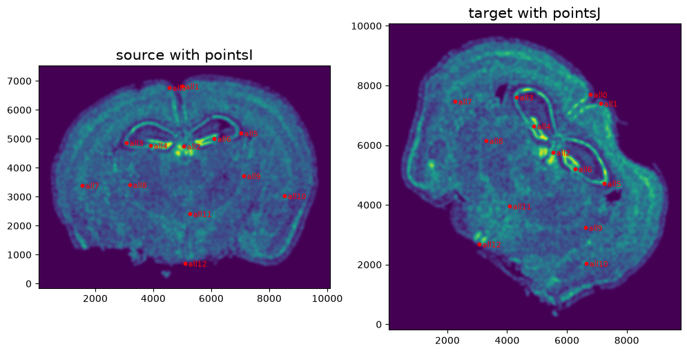
From the landmark points, we can generate a linear transformation L and translation T which will produce a simple initial affine transformation A.
[16]:
# set device for building tensors
if torch.cuda.is_available():
torch.set_default_device('cuda:0')
else:
torch.set_default_device('cpu')
[17]:
# compute initial affine transformation from points
L,T = STalign.L_T_from_points(pointsI,pointsJ)
A = STalign.to_A(torch.tensor(L),torch.tensor(T))
We can show the results of the simple affine transformation on the rasterized source image.
[18]:
# compute initial affine transformation from points
AI= STalign.transform_image_source_with_A(A, [YI,XI], I, [YJ,XJ])
fig,ax = plt.subplots(1,2)
if AI.is_cuda:
ax[0].imshow((AI.cpu().permute(1,2,0).squeeze()), extent=extentJ)
else:
ax[0].imshow((AI.permute(1,2,0).squeeze()), extent=extentJ)
ax[1].imshow((J.transpose(1,2,0).squeeze()), extent=extentJ)
ax[0].set_title('source with affine transformation', fontsize=15)
ax[1].set_title('target', fontsize=15)
# invert only rasterized images
ax[0].invert_yaxis()
ax[1].invert_yaxis()
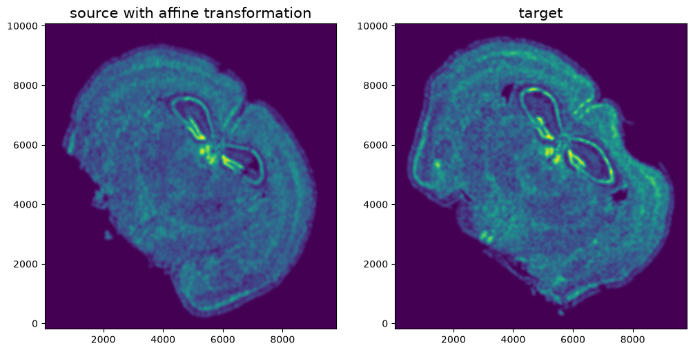
Finally, we can apply our affine transform to the original sets of single cell centroid positions to achieve their new aligned positions.
[19]:
#apply A to sources points in row, column (y,x) orientation
affine = np.matmul(A.cpu().numpy(),np.array([yI, xI, np.ones(len(xI))]))
xIaffine = affine[1,:]
yIaffine = affine[0,:]
And we can visualize the results.
[20]:
# plot results
fig,ax = plt.subplots()
ax.scatter(xI,yI,s=1,alpha=0.1, label='source')
ax.scatter(xIaffine,yIaffine,s=1,alpha=0.1, label = 'source aligned')
ax.scatter(xJ,yJ,s=1,alpha=0.1, label='target')
ax.legend(markerscale = 10)
[20]:
<matplotlib.legend.Legend at 0x138da5f40>
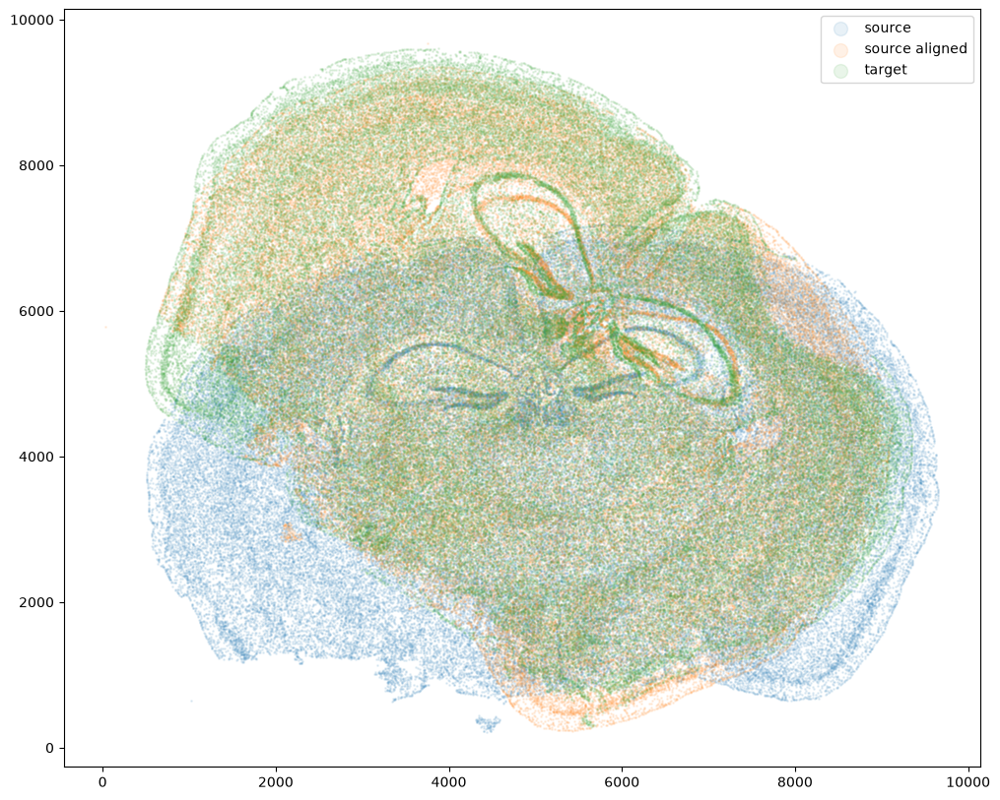
And save the new aligned positions by appending to our original data
[21]:
df3 = pd.DataFrame(
{
"aligned_x": xIaffine,
"aligned_y": yIaffine,
},
)
results = pd.concat([df1, df3], axis=1)
results.head()
[21]:
| Unnamed: 0 | fov | volume | center_x | center_y | min_x | max_x | min_y | max_y | aligned_x | aligned_y | |
|---|---|---|---|---|---|---|---|---|---|---|---|
| 0 | 158338042824236264719696604356349910479 | 33 | 532.778772 | 617.916619 | 2666.520010 | 614.725219 | 621.108019 | 2657.545209 | 2675.494810 | 1144.886231 | 7614.195863 |
| 1 | 260594727341160372355976405428092853003 | 33 | 1004.430016 | 596.808018 | 2763.450012 | 589.669218 | 603.946818 | 2757.013212 | 2769.886812 | 1197.052502 | 7703.386882 |
| 2 | 307643940700812339199503248604719950662 | 33 | 1267.183208 | 578.880018 | 2748.978012 | 570.877217 | 586.882818 | 2740.489211 | 2757.466812 | 1174.838094 | 7706.104535 |
| 3 | 30863303465976316429997331474071348973 | 33 | 1403.401822 | 572.616017 | 2766.690012 | 564.937217 | 580.294818 | 2756.581212 | 2776.798812 | 1182.723315 | 7724.233148 |
| 4 | 313162718584097621688679244357302162401 | 33 | 507.949497 | 608.364018 | 2687.418010 | 603.061218 | 613.666818 | 2682.493210 | 2692.342810 | 1152.710375 | 7637.229823 |
We will finally create a compressed .csv.gz file named mouse_brain_map_BrainReceptorShowcase_Slice2_Replicate3_STalign_to_Slice2_Replicate2.csv.gz
[22]:
results.to_csv('../merfish_data/mouse_brain_map_BrainReceptorShowcase_Slice2_Replicate3_STalign_to_Slice2_Replicate2_affine_only_with_points.csv.gz',
compression='gzip')
To further analyze our results we can measure the target registration error (TRE) of the landmarks (between source and target) before and after alignment. To do that, first we need to apply the affine alignment to the source landmark points.
[23]:
#apply A to sources landmark points in row, column (y,x) orientation
ypointsI = pointsI[:,0]
xpointsI = pointsI[:,1]
affine = np.matmul(A.cpu().numpy(),np.array([ypointsI, xpointsI, np.ones(len(ypointsI))]))
xpointsIaffine = affine[1,:]
ypointsIaffine = affine[0,:]
pointsIaffine = np.column_stack((ypointsIaffine,xpointsIaffine))
[24]:
print(pointsIaffine)
[[7729.29343674 6656.15725019]
[7421.11687713 6998.47047486]
[5821.96940059 5607.52920106]
[7414.99213008 4336.92872391]
[6709.25420423 4841.77352617]
[4660.09861705 7270.82747883]
[5222.70391486 6504.45726932]
[7460.27645534 2279.63529464]
[6228.59341962 3420.29244766]
[3473.84607841 6321.53466748]
[1884.33147259 6808.37830237]
[3898.43476186 4150.66032244]
[2731.75477764 2858.50803342]]
We can get the mean TRE across landmark points by using STalign.calculate_tre
[25]:
treBefore = STalign.calculate_tre(pointsI,pointsJ)
treAffine = STalign.calculate_tre(pointsIaffine,pointsJ)
print("The mean TRE of landmarks before alignment is {:.0f} +/- {:.2f}".format(treBefore[0], treBefore[1] ))
print("The mean TRE of landmarks after affine alignment is {:.0f} +/- {:.2f}".format(treAffine[0], treAffine[1] ))
The mean TRE of landmarks before alignment is 2011 +/- 1065.47
The mean TRE of landmarks after affine alignment is 156 +/- 87.61
Alternatively, we can look at the TRE for each target and source pair of landmark points
[26]:
treBefore = np.sqrt(np.sum((pointsI - pointsJ)**2,axis=1))
treAffine = np.sqrt(np.sum((pointsIaffine - pointsJ)**2,axis=1))
print(treBefore)
print(treAffine)
[2419.2442468 2205.76254597 1123.35226287 3008.23169818 2109.34339702
527.09131807 264.91285586 4139.86384852 2740.62096967 693.72381585
2126.75327885 1945.45899846 2843.49238906]
[123.43465688 126.3502151 95.84986629 201.08638033 77.76014208
73.14227289 235.55559977 33.30341619 148.66112843 371.00932267
234.67742254 100.25046029 203.43366221]
We can plot the TRE before alignment on each of the target landmarks
[27]:
# plot
fig,ax = plt.subplots()
ax.imshow((J.transpose(1,2,0).squeeze()), extent=extentJ)
trans_offset_0 = mtransforms.offset_copy(ax.transData, fig=fig,
x=0.05, y=-0.05, units='inches')
ax.scatter(pointsJ[:,1],pointsJ[:,0], c='red', s=10, label='Target')
#ax.scatter(pointsI[:,1],pointsI[:,0], c='orange', s=10, label='Source')
#k=0
#for i in pointsIlist.keys():
# for j in range(len(pointsIlist[i])):
# ax.text(pointsIlist[i][j][0], pointsIlist[i][j][1],f'{treBefore[k]:.0f}', c='red', transform=trans_offset_0, fontsize= 15)
# k = k+1
for i in range(pointsJ.shape[0]):
ax.text(pointsJ[i,1],pointsJ[i,0],f'{treBefore[i]:.0f}', c='red', transform=trans_offset_0, fontsize= 15)
ax.set_title('TRE Before Alignment', fontsize=15)
ax.legend(markerscale = 1)
# invert only rasterized images
ax.invert_yaxis()
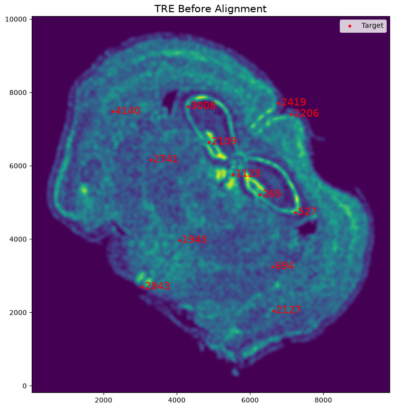
Next plot shows a reminder of what the landmarks of source and target looked like before alignment
[28]:
# plot
fig,ax = plt.subplots()
ax.scatter(xI,yI,s=1,alpha=0.2, label='source')
ax.scatter(xJ,yJ,s=1,alpha=0.1, label= 'target')
ax.legend(markerscale = 10)
ax.scatter(pointsI[:,1],pointsI[:,0], c='purple', s=10, label='Source')
ax.scatter(pointsJ[:,1],pointsJ[:,0], c='green', s=10, label='Target')
ax.set_title('Before Alignment', fontsize=15)
[28]:
Text(0.5, 1.0, 'Before Alignment')
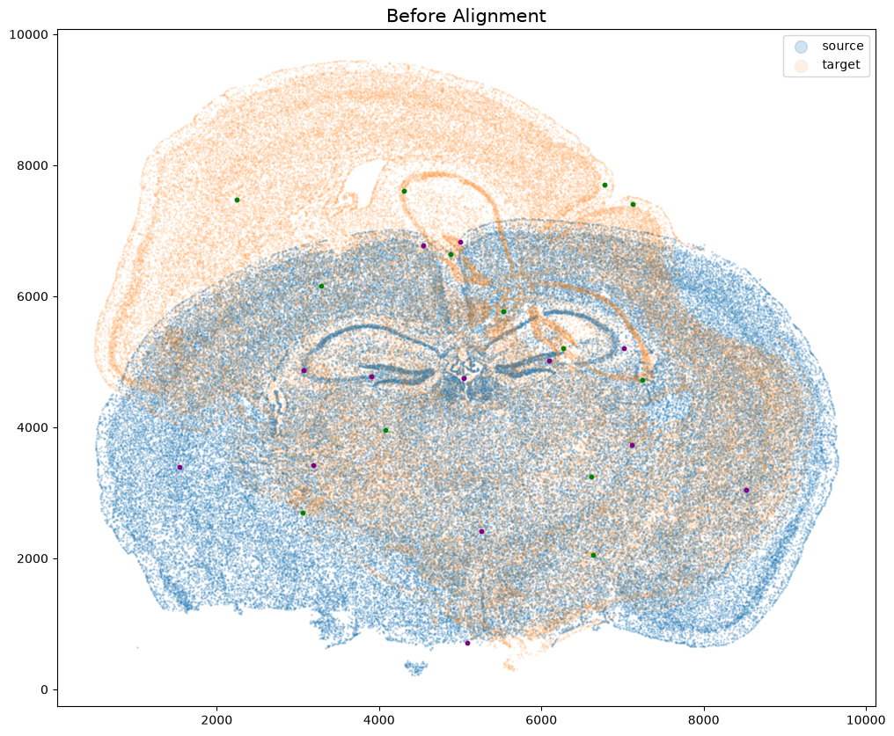
We can plot the TRE after alignment on each of the target landmarks along with the source landmarks after affine alignment.
[29]:
# plot
fig,ax = plt.subplots()
ax.imshow((J.transpose(1,2,0).squeeze()), extent=extentJ)
trans_offset_0 = mtransforms.offset_copy(ax.transData, fig=fig,
x=0.05, y=-0.05, units='inches')
ax.scatter(pointsJ[:,1],pointsJ[:,0], c='red', s=10, label='Target')
ax.scatter(pointsIaffine[:,1],pointsIaffine[:,0], c='orange', s=10, label="Affine Alignment")
#k=0
#for i in pointsIlist.keys():
# for j in range(len(pointsIlist[i])):
# ax.text(pointsIlist[i][j][0], pointsIlist[i][j][1],f'{treAffine[k]:.0f}', c='red', transform=trans_offset_0, fontsize= 15)
# k = k+1
for i in range(pointsJ.shape[0]):
ax.text(pointsJ[i,1],pointsJ[i,0],f'{treAffine[i]:.0f}', c='red', transform=trans_offset_0, fontsize= 15)
ax.set_title('TRE After Affine Alignment', fontsize=15)
ax.legend(markerscale = 1)
# invert only rasterized images
ax.invert_yaxis()
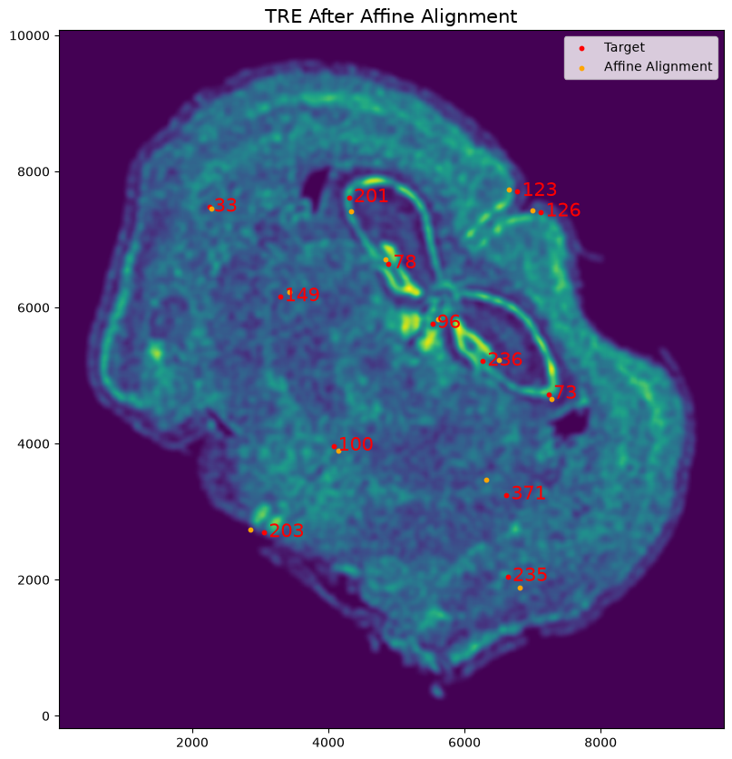
More summary plots of alignment below:
[30]:
# plot results
fig,ax = plt.subplots()
ax.scatter(xI,yI,s=1,alpha=0.1, label='source')
ax.scatter(xIaffine,yIaffine,s=1,alpha=0.1, label = 'source aligned')
ax.scatter(xJ,yJ,s=1,alpha=0.1, label='target')
ax.legend(markerscale = 10)
#ax.scatter(pointsI[:,1],pointsI[:,0], c='purple', s=10, label='Source')
ax.scatter(pointsJ[:,1],pointsJ[:,0], c='green', s=10, label='Target')
ax.scatter(pointsIaffine[:,1],pointsIaffine[:,0], c='red', s=10, label="Affine Alignment")
[30]:
<matplotlib.collections.PathCollection at 0x1384984d0>
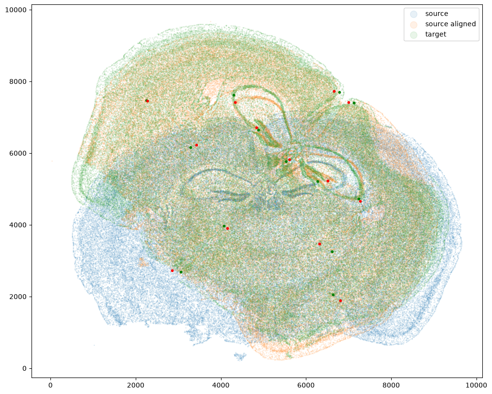
[31]:
# plot results
fig,ax = plt.subplots(2,2)
#Source
ax[0][0].scatter(xI,yI,s=1,alpha=0.1, label='source cells')
ax[0][0].scatter(pointsI[:,1],pointsI[:,0], c='blue', s=10, label='source landmarks')
ax[0][0].set_title('Source', fontsize=15)
ax[0][0].set_aspect('equal')
lgnd = ax[0][0].legend(scatterpoints=1, fontsize=10)
for handle in lgnd.legend_handles:
handle.set_sizes([10.0])
#Target
ax[0][1].scatter(xJ,yJ,s=1,alpha=0.1, label='target cells', c='orange')
ax[0][1].scatter(pointsJ[:,1],pointsJ[:,0], c='red', s=10, label='target landmarks')
ax[0][1].set_title('Target', fontsize=15)
ax[0][1].set_aspect('equal')
lgnd = ax[0][1].legend(scatterpoints=1, fontsize=10)
for handle in lgnd.legend_handles:
handle.set_sizes([10.0])
#Affine Aligned Source
ax[1][0].scatter(xIaffine,yIaffine,s=1,alpha=0.1, label = 'affine aligned source cells', c='blue')
ax[1][0].scatter(pointsIaffine[:,1],pointsIaffine[:,0], c='purple', s=10, label="affine aligned source landmarks")
ax[1][0].set_title('Affine Aligned Source', fontsize=15)
ax[1][0].set_aspect('equal')
lgnd = ax[1][0].legend(scatterpoints=1, fontsize=10)
for handle in lgnd.legend_handles:
handle.set_sizes([10.0])
#Overlay of Target and Affine Aligned Source
ax[1][1].scatter(xJ,yJ,s=1,alpha=0.1, label='target', c='orange')
ax[1][1].legend(markerscale = 10)
ax[1][1].scatter(pointsJ[:,1],pointsJ[:,0], c='red', s=10, label='target landmarks')
ax[1][1].scatter(xIaffine,yIaffine,s=1,alpha=0.1, label = 'source aligned', c='blue')
ax[1][1].scatter(pointsIaffine[:,1],pointsIaffine[:,0], c='purple', s=10, label="affine aligned source landmarks")
ax[1][1].set_title('Overlay', fontsize=15)
ax[1][1].set_aspect('equal')
lgnd = ax[1][1].legend(scatterpoints=1, fontsize=10)
for handle in lgnd.legend_handles:
handle.set_sizes([10.0])
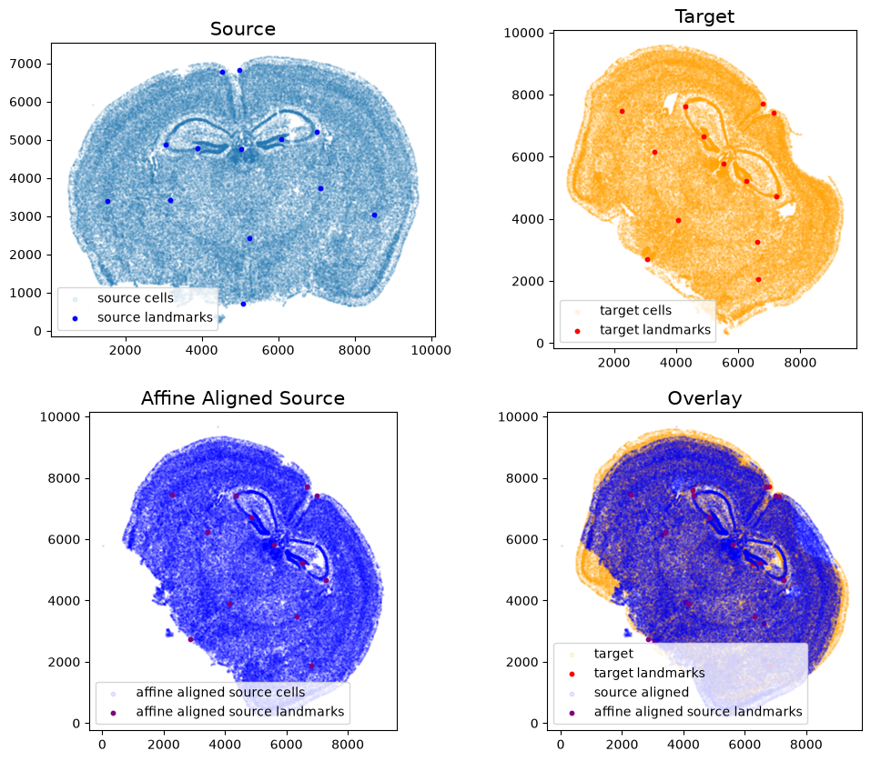
[ ]: